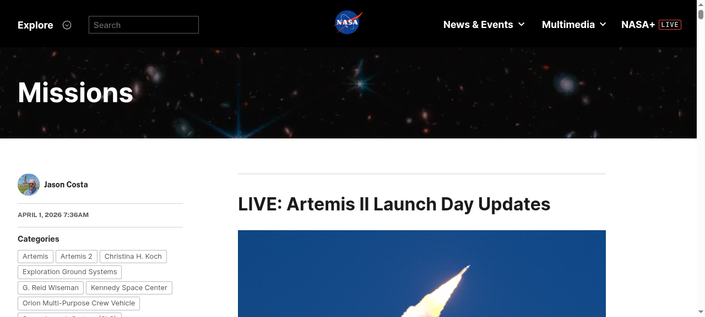
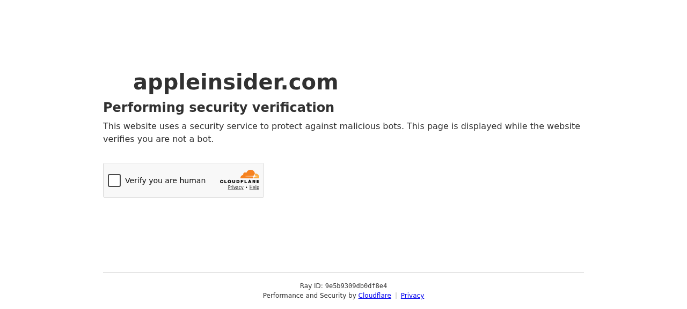
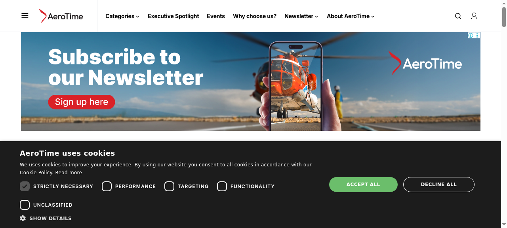

US Technology Morning Brief — Daily Bilingual Edition
2026年4月1日，NASA阿提米絲二號（Artemis II）載人繞月任務從甘迺迪太空中心成功發射，展開為期約十天的歷史性飛行。這是自1972年阿波羅17號以來，人類首次重返月球軌道。機組人員包含NASA太空人萊德·威斯曼（指令長）、維克托·葛洛弗（駕駛員）、克莉絲蒂娜·科克，以及加拿大太空總署的傑瑞米·漢森。任務採用「自由返回軌道」，太空船將繞過月球後自動返回地球，無需引擎點火。阿提米絲二號的成功為2027年阿提米絲三號登月任務奠定基礎，也是美國重返月球战略的重要里程碑。

On April 1, 2026, NASA's Artemis II lunar flyby mission successfully launched from Kennedy Space Center, marking the first crewed lunar mission since Apollo 17 in 1972. The four-person crew — Commander Reid Wiseman, Pilot Victor Glover, Mission Specialist Christina Koch of NASA, and Canadian Space Agency astronaut Jeremy Hansen — embarked on an approximately ten-day free-return trajectory around the Moon. The spacecraft will loop around the Moon and automatically return to Earth without requiring an engine burn, a critical test for the upcoming Artemis III lunar landing mission targeted for 2027.
根據彭博社報導，Apple 正在內部測試一項重大 Siri 升級功能：讓 Siri 能夠在單一對話中理解並執行多個連續指令。這項功能將打破 Siri 長期以來一次只能處理一項請求的限制。使用者可以說出「設定15分鐘計時器，然後告訴我天氣怎麼樣」這類複合句，Siri 將依序執行所有指令。報導指出，該功能仍在測試階段，具體上線時間尚未確定，但這代表 Apple 正努力縮小 Siri 與 Google Gemini、ChatGPT 等新一代 AI 助手之間的能力差距。分析師認為，若該功能正式推出，將是 Siri 自2011年推出以來最大的功能性升級。

Apple is internally testing a major upgrade to Siri that would allow the digital assistant to process multiple sequential commands in a single query, breaking from its long-standing limitation of handling one request at a time, Bloomberg News reported. Users would be able to say something like "Set a 15-minute timer, then tell me what the weather is like," and Siri would execute both tasks in order. The feature is still in testing with no confirmed launch date, but it signals Apple's push to close the capability gap with newer AI assistants like Google Gemini and OpenAI's ChatGPT. Analysts say it could be the most significant functional upgrade to Siri since its 2011 debut.
Amazon 的衛星網路子公司 Leo 與達美航空（Delta Air Lines）於2026年3月31日宣布達成合作協議，將在500架達美班機上部署衛星 Wi-Fi 服務，挑戰馬斯克旗下 Starlink 在機上網路市場的主導地位。Leo 將在達美航空的新增機隊上安裝其衛星星光終端機，服務預計於2028年在美國本土航班率先啟用。達美航空行銷與產品長蘭詹·戈斯瓦米表示，此合作將讓數百萬旅客在飛行中享受高速網路服務。此前，Starlink 已先後與夏威夷航空、美國航空等多家航空公司簽署類似協議，航空 Wi-Fi 市場競爭日趨激烈。

Amazon's satellite internet unit Leo signed a deal with Delta Air Lines on March 31, 2026, to provide in-flight Wi-Fi across 500 aircraft, directly challenging Elon Musk's Starlink dominance in the aviation connectivity market. Leo will install its satellite terminals on Delta's fleet, with service expected to launch first on U.S. continental flights in 2028. Delta Chief Marketing and Product Officer Ranjan Goswami said the partnership would bring high-speed internet to millions of passengers. Starlink has already secured similar agreements with Hawaiian Airlines, American Airlines, and others, making the aviation Wi-Fi market increasingly competitive.
美光科技（Micron Technology）股價在2026年4月1日飆漲10.9%，主要受惠於人工智慧應用對高效能記憶體晶片（HBM）與DRAM的爆炸性需求。AI資料中心的大規模建設持續拉動記憶體晶片需求，美光作為全球三大記憶體晶片製造商之一，優先受惠於這波熱潮。分析師指出，輝達（Nvidia）GPU伺服器對HBM的需求是美光營收增長的主要驅動力。市場預期記憶體超級循環將持續至2027年，美光已宣布大幅提高資本支出以擴充產能，包括在美國本土新建先進封裝廠房的投資計畫。
Micron Technology shares surged 10.9% on April 1, 2026, driven by explosive demand for high-bandwidth memory (HBM) chips and DRAM from artificial intelligence applications. As AI data centers expand at a rapid pace, Micron — one of the world's three largest memory chip makers — has emerged as a key beneficiary. Analysts say demand for HBM from Nvidia GPU servers is the primary revenue driver. Markets expect the memory chip supercycle to extend through 2027, and Micron has announced plans to significantly increase capital expenditure to expand production capacity, including new advanced packaging facilities in the United States.
根據 Crunchbase News 統計，截至2026年4月1日的一週內，美國科技業至少有1,012名員工被裁員或收到裁員通知。本週裁員重點包括：Oracle 已開始裁減數千名員工，據 CNBC 報導，主因為公司股價下跌及投資人對其 AI 基礎建設鉅額支出感到擔憂；Meta 裁員700人，主要來自 Reality Labs、招募、銷售及 Facebook 部門，隨著公司戰略轉向人工智慧，裁員重點亦隨之調整；X（前Twitter）則裁員20人，主要為非技術崗位，被視為母公司 SpaceX 首次公開發行（IPO）前的組織精簡。AI 浪潮席捲下，科技業結構調整仍在持續。
At least 1,012 U.S. tech sector employees were laid off or scheduled for layoffs during the week ended April 1, 2026, per a Crunchbase News tally. Key cuts this week: Oracle began laying off thousands of workers amid declining share prices and investor concerns over heavy AI infrastructure spending, per CNBC. Meta cut 700 workers primarily from its Reality Labs, recruiting, sales, and Facebook units as the company shifts priorities toward artificial intelligence. X, formerly Twitter, laid off 20 non-technical staff, seen as restructuring ahead of parent company SpaceX's planned initial public offering. The wave of AI-driven restructuring continues to reshape the U.S. technology sector.